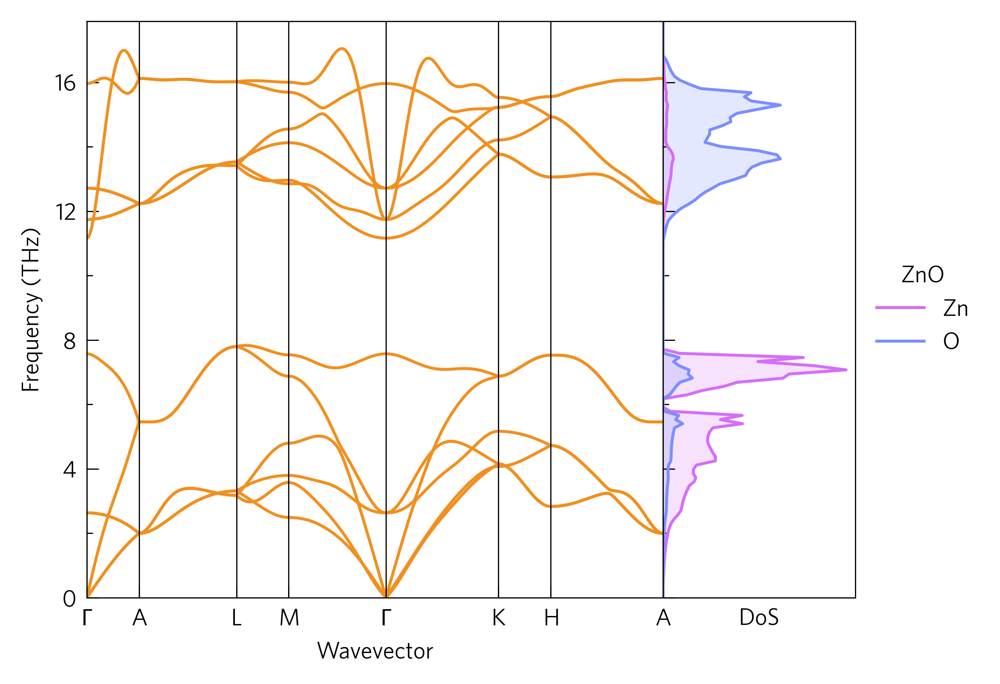

Tutorial-03: Compound Axes¶
This dispersion includes a phonon density of state (DoS) alongside, showing which atoms contribute to each mode. This can help determine the way in which heat is transported through the lattice, for example the lowest three (acoustic) modes, which often transport the majority of the heat, are dominated by Zn. Frequency-localised DoSs of a particular atom can indicate spacially localised, poorly-conductive phonons. The DoS is also calculated via Phonopy.
Often, a good way to draw links between data is to position them together. Here, the DoS shows which atoms affect which parts of the phonon dispersion. ThermoParser offers a number of ways to streamline comparing graphs, including compound axes and enhanced legend handling.
The CLI version of this code is:
tp plot phonons ../data/zno/band.yaml -c '#f0901f' --dos ../data/zno/projected_dos.dat --poscar ../data/zno/POSCAR --doscolour={'#d46ef9','#7b8eff'} --legend_title ZnO --location 2
And the python version is:
1 2 3 4 5 6 7 8 9 10 11 12 13 14 15 16 17 18 19 20 21 22 23 24 25 26 27 28 29 30 | #!/usr/bin/env python3
import tp
pfile = '../data/zno/band.yaml'
dfile = '../data/zno/projected_dos.dat'
poscar = '../data/zno/POSCAR'
colour = '#f0901f'
colours = {'Zn': '#d46ef9',
'O': '#7b8eff'}
location = 2
# Axes
fig, ax, add_legend = tp.axes.small.one_dos()
# Load
dispersion = tp.data.load.phonopy_dispersion(pfile)
dos = tp.data.load.phonopy_dos(dfile, poscar=poscar)
# Plot
tp.plot.phonons.add_dispersion(ax[0], dispersion, colour=colour)
tp.plot.frequency.add_dos(ax[1], dos, colour=colours, invert=True, line=True)
# Formatting
ax[1].set_ylim(ax[0].get_ylim())
add_legend(title='ZnO')
# Save
fig.savefig('tutorial-03.png')
|
Axes (line 15)¶
Rather than discard the add_legend function, we now need to keep
it. We also a different axes function, one_dos, which contains a
standard set of axes and a small ancillary one for the DoS. As there
are multiple axes, ax is now a list of axes.
Plot (lines 22-23)¶
As ax is a list, we need to index it with [] to select which
one we want to plot on. The order is always the same as they appear on
the plot. As we want the DoS plot to share the frequency axes with the
dispersion, the invert argument is used. All plotting functions in
the frequency module have this argument. We also need to match the
axes together, which is done on line 26.
As an aside, in this case we have used a POSCAR to specify which atoms
are shown in the DoS, but this can also be specified manually with the
atoms argument. This takes a string of space-delimited items, which
are either atom names (e.g. Zn) or numbers corresponding to the
previous atom name. In this way, atoms in different environments can be
separated, or multiple unalike atoms can be plotted as one.
Legend (line 27)¶
add_legend places a legend at one of several pre-designed places,
depending on the axes function. The default is usually to the right of,
or above the axes, which could be specified by right or above
respectively, but it can also be placed inside a set of axes using
numbers, from left to right then top to bottom. Here, there is space in
the second (DoS) axes, so we have specified place 2. It also takes
most normal matplotlib legend arguments, such as title here.
For figures with more than one set of axes, the labels are consolidated
into one legend, with duplicates removed, which uses up the handles
and labels arguments, so in order to specify your own, you must set
custom=True (not necessary for single-axes figures).
tp.axes.legend.consolidate may also be useful for non-ThermoParser
endaevors, as will be discussed in Tutorial-05.